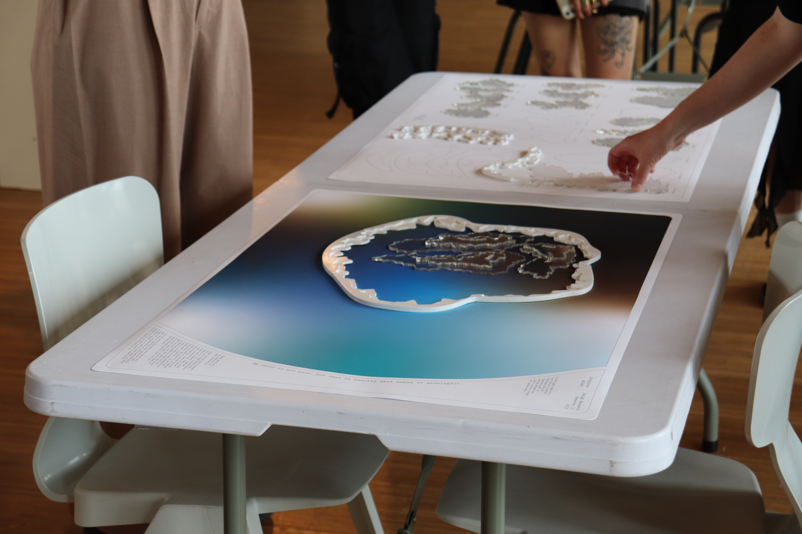
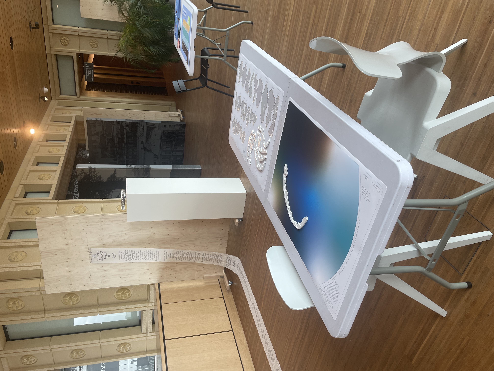
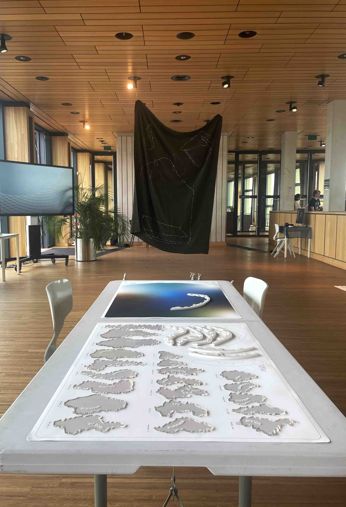
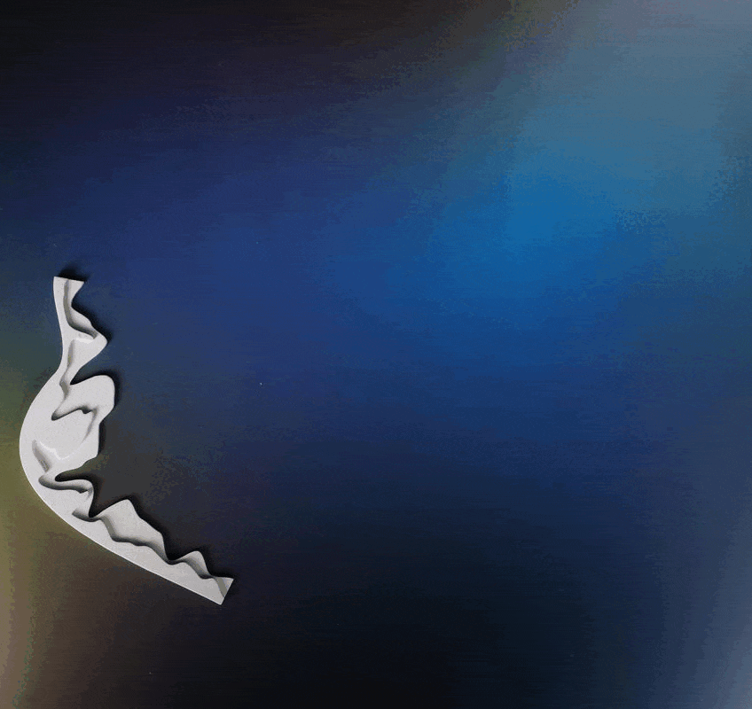
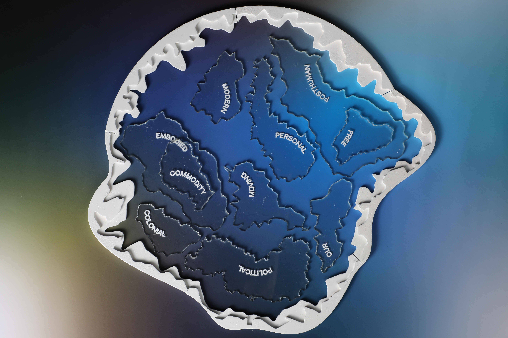

My water is not pure, but that is exactly what makes it meaningful.
Conversational board game
June 2023




Exhibited at Rozet Library, Arnhem
The research was based on the book "Bodies of Water: Posthuman Feminist Phenomenology" by Astrida Neimans and Jamie Linton's concept of 'modern water.'
Guided by Tereza Ruller
ArtEZ
2023

My water is not pure, but that is exactly what makes it meaningful is a conversational game, where Water becomes a Mediator of the conversation, rather than a reason for conflicts and wars. Participants take turns layering different shapes — “perspectives on Water”, making the overall idea of water deeper, more diverse, inclusive, and meaningful, explaining their opinion and listening to the possible opposite view. There is no bad or good take, as every perspective (even the one that historically or culturally has a negative connotation) let us come closer to what Water actually signifies to us as humanity.

